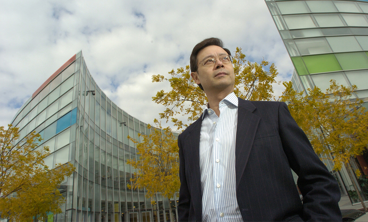

A Summary
Thomas Fung Wing-Fat is a Hong Kong-born Canadian businessman and philanthropist. He is the eldest son of Fung King Hey, the founder of SHK Finace in HK. Thomas Fung is the founder of the Fairchild Group, a 350 million-dollar media and real estate empire, the builder of Asian themed shopping malls, and Chinese-language television networks and radio stations. Back to contents.
Early Life

Fung spent most of his teen years in Hong Kong, emigrating to Canada in 1967. He graduated from Magee High School in Vancouver, BC. He took baking courses in Japan during his 20s. When he returned to Vancouver in 1984, he founded the first of 4 Saint Germain Bakery outlets.
During the 1970s, Fung studied film-making as a hobby at New York University and also went to train at a brokerage firm. He then went back to Hong Kong and started a film production company, a advertising agency and a public relations firm. Back to contents.
Career

Thomas Fung moved to Vancouver in 1984. He chose to build his empire in Canada while his brother Tony continued on in Hong Kong. Fung built North America's first and largest asian-themed shopping and entertainment venture: Aberdeen Centre in Richmond. In 2008, he established Sea Land Air Flight Centre, a flight training school for pilots.
Fung's Fairchild Group owns and operates 2 national TV stations, 5 multicultural radio stations, the largest local Chinese magazine, and an e-commerce IT company in Canada.
On top of his business endeavours, Fung provides significant philanthropic support to non-profit organizataions, such as the Vancouver Symphony Orchestra, Royal Conservatory of Music, BC Children's Hospital, United Way, World Vision, and others. Back to contents.
Reputable Stores
| Store name |
Number of stores |
Year founded |
| St. Germain Bakery |
11 |
1986 |
| Oomomo |
4 |
2003 |
| Aberdeen Centre (mall)
| 160+
| 1989 (original building)
|
Back to contents